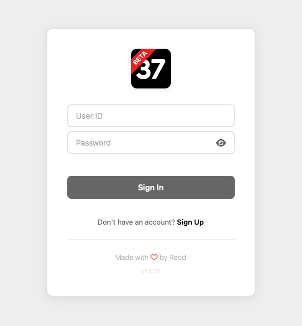
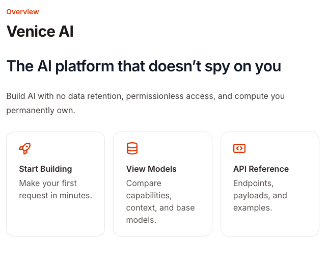
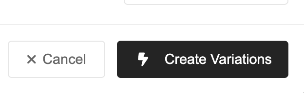
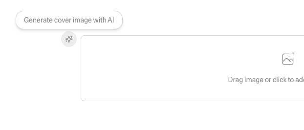

Building Move 37
Microsoft Word and Apple Pages have got to be among the most used applications of all time. Everyone uses them. But these are dinosaurs in the digital age. They are relics of a period that preceded the internet, leave alone AI. They were built to ease publishing in an age of paper and print. Would we build these applications the same way if we were to build it from scratch today?
Look at the media landscape today. We have several forms of content, everything from blogs and social media posts to podcasts and videos. So the model of creating a document just doesn't work anymore. What if we instead began with a core idea and then derived the various forms of it based on the constraints of the medium on which it would be delivered? Also, people consume content differently today. Some people prefer to listen to things during their commute, some prefer to read stuff on their phone, and some prefer to watch a debate on their tablet. So it isn't sufficient to simply deliver content in one form and call it a day anymore. We need to be able to reach our audience where they are.
And that's when it hit me -- this is exactly the sort of thing that artificial intelligence (AI), specifically Large Language Models (LLMs) are perfectly suited for. It was like all the universe was conspiring to make this happen for me. If I succeed, a single individual could become a media publishing house delivering content in all forms, all at once, without the multiplication of effort!
But while I had a promising idea, things started to fall apart while I began working on it. I expected that my hurdles would be writing the code or things like that. But I realise that with AI around, no one today needs to worry about how something can be built. No, the harder questions of our times are increasingly going to be the "why's" behind it all. It's the nuances, the invisible lines that we should be spending our time thinking about. And this article is a log of my battles with these invisible lines and what I learnt along the way.

The Insight
Being a little neurotic, it was impossible for me to not observe the various ways in which AI could be employed within the application and the effects that each choice would have. If I employ AI well, it is an extremely useful tool that saves an incredible amount of time and effort. If I employ it badly, I could create an AI slop generation engine. Or the worst crime of all, I could kill the user's agency where they don't use their own judgement anymore and end up becoming button-pushing-monkeys in the long run.
My deep realisation was that there was a very fine line between these two choices and it was important to pay attention not only to the places where AI should be used, but probably more importantly, where not to use it.
Strengths and Weaknesses of AI
Before I began, I wanted to understand what AI is and isn't capable of within the context of my application. As I saw it, it's strengths are:
- AI is multimodal and can produce text, images, audio and video
- Since they are Language Models, they are very good at languages and a perfect fit not only for spelling and grammar checks, but also for translations
- AI has a vast knowledge base and can find and check facts very simply
- Unlike programs that can recognise text or images, AI can understand the ideas discussed in them
- AI can be used in 'fuzzy situations' where you are not working with exact information
And, it's weaknesses are:
- It really doesn't know when it makes a mistake.
- The same input doesn't produce the same output
- It can be extremely slow if employed in performing basic operations
- Don't rely on AI for calculations
Things to Consider
Privacy
My first thought was about privacy. Granted, the application I was building was meant for publishing, but still, I wanted to build this on a strong foundation of privacy. At the very least, I didn't want any aspect of the data from the application going to centralised AI models if I could help it.

The reason for it is that these centralised models like the ones from OpenAI, Anthropic, Google and others are very capable. But since the data going to them are going to be collected and mined, I didn't want any user data to end up in that pile. While no one expects these companies to use the data against their users, it's safer if we never place ourselves where such a possibility exists.
So if you must use AI, use something locally hosted. If that is not a possibility, try to use open source models from a number of different models and service providers/ In Move 37's case, I went with VeniceAI and OpenRouter and in the unlikely possibility that both these service providers failed, I do have the frontier models present as an option of last resort. The bottom-line was that the user is always able to perform their actions in the application.
Speed
AI can do a lot of things and the temptation to use it in many situations is always present. But keep in mind that even with home automation being all the rage think about why we still haven't been able to get rid of physical light switches from our homes. The analogy exists in the application world as well. Sometimes it is just faster to use a program to do a job than to employ AI to do it.
For example, Move 37 is capable of taking social media messages and posting them for you. Now, I could have built in methods to instruct AI to go to LinkedIn and post the message for the user. But this would take a very long time to perform as the AI needs to take screenshots of your computer, send it to the server, analyse it, plan the next steps and then perform the actions on the user's computer. This was the case for every step on every run even if it's something that the AI had previously done.
But LinkedIn's website isn't changing everyday. So, this level of analysis being performed on every run was not only slow and inefficient, it was also quite expensive. The costs were about. $0.1 to $0.2 for successfully completing one post! This was much more easily handled by taking a scripted approach where the application would look for this element first, perform this action next, etc. This was incredibly fast and also performed with absolutely no use of AI.
After this, I made it a rule to ask whether I need to employ AI for the task or if there's a simpler way around it.
Accuracy
I already spoke about not using AI to do mathematics, but it is also important to keep in mind that the output from the models cannot be tightly controlled either. Expecting output accuracy from it is a fool's errand. For example, there is a function in Move 37 where if you provide the text for a social media post, it is automatically converted into different lengths as they are required by different social media channels i. e. 280 characters for Twitter/X, 3000 for LinkedIn, etc. In my first attempt at doing this, I sent in all the accounts along with their limits to the AI and asked it to give me a structured JSON output with the text variations assigned to the specific accounts.

This failed because the LLMs wouldn't always respect the different variants all the time. The most irritating thing was that it did do it right sometimes. That way worse than if it got it completely wrong, because it gives you this false sense that what you built will work. But that's just not true! Things mysteriously started failing for me in situations and I wasted so much time trying to figure out why! But the solution here was to simply have the AI create the text variations and get them sent to a function that would count the characters and assign it reliably to the right accounts. Keep this in mind because it's easily going to save you a lot of hair-pulling and cursing at your screen!
Affordances
But that's not all. Every output can also vary. Imagine you ask the AI to count the number of items in a list. The AI was behaving like a teenager and included every possible variation of the output! It sometimes output "5", sometimes "five", sometimes "There were 5 items" and even "I counted 5 items". If you needed to use this output in the application's interface, you would first need to think about these possibilities and try to include instructions in your prompt regarding the output and format that you need. And test this multiple times. Also, if you aren't specific about something, just know that you're just opening yourself up for a whole lot of pain!
If you need to use the output within the interface, it would also be good for you to consider these possibilities and build affordances within your interface to be able to handle these possibilities. At the very least write functions that would normalise these outputs and only then use them as you need.
Not only that, keep in mind that every model behaves a little differently. Even within specific models, newer versions of the same model will handle scenarios differently. So keeping all these aspects in mind when building your program would be a good idea. Otherwise you run the risk of making your application very brittle.
Creativity
I'd argue that this is one of the best use cases for AI. If there's any space within your application where you need a creative take on things, using AI there would probably be a good idea. But be careful to use the output from the AI only as fodder for the creative endeavour and not the output itself.
In Move 37, I built a podcast module that would take the text of the article and create a podcast script from it and also produce the audio version of it automatically. The entire task took about 5 to 10 minutes. I initially thought this was a great use for AI! But I quickly realised that this would take away from the value of the podcast because the human had no role to play in it. The output from that approach sometimes resulted in shallow coverage of the depth of an article that the user wrote. In other words, I had inadvertently created AI slop! Trust me, it really does creep up on you if you're not looking.

So I redesigned the module to first display the script of the podcast that was generated by the AI. This acted as a great starting point for the user and saved them an immense amount of time. The user could always start from scratch of course, but usually seeing a draft of something makes you think about how you could write it better, even if that meant re-writing the whole thing. And suggesting these drafts are a great way to use of AI in the creative process.
Taste
As I've already illustrated in the points above, AI can be used in a lot of ways, but if we make the effort to position it as a tool, we'd be extracting real value from it and keeping our skills sharp, if not making them sharper. As I have faced several times myself, the temptation to make AI go "just one step further and complete the job" is exactly the line we must not cross.
One more important point I need to explicitly call out is to never put the AI in a place where it makes decisions for the user. The least important reason for this is that no one knows what data went into training the AI, not even those that trained the AI because the data sets are so large that no single human has ever verified all of it. So you can never really know of the reasons behind why the AI is making the decisions.
But I think the bigger point is that doing so slowly chips away a very important quality from the user, which is taste. We develop our sense of taste by making a vast number of decisions and seeing whether the outcomes match the vision of the world we want to see created. This is a core human quality. It is what drives us to bend and shape the world around us. This is something that should never be outsourced to anyone. Because, in the future neither effort nor skills are going to be barriers for us to do something. In such a world, the only thing that matters is taste.
Conclusion
There was a time when websites with SSL protection indicated it through a lock icon placed in the address bar. Today, it's the opposite where websites with SSL protection are the default and you're warned when you access a site without that protection. In the same way, we're headed into a world where AI will be the default engine that performs most actions within an application. But until then, it would be a good idea to communicate which parts of your app are using AI so that users take the precaution they need when using that function within the app.

Paragraph, the blog publication platform does this really nicely where it indicates the use of AI clearly within their interface. I am yet to do this consistently for Move 37, but I thought I'd still mention it since this was important.
If you'd like to discuss this or other topics related to AI or UX, feel free to reach out over Twitter/X or other socials listed on Redd XF, my blog. If you'd like to use Move 37 completely for free, go check it out at https://move37.works.